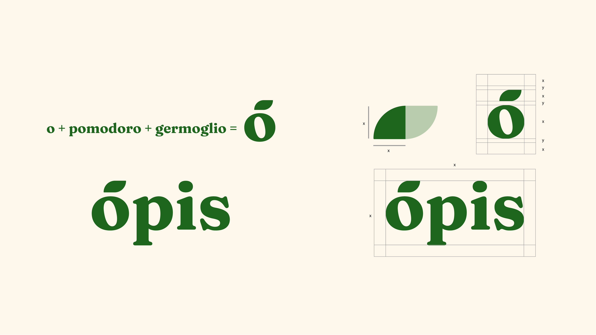
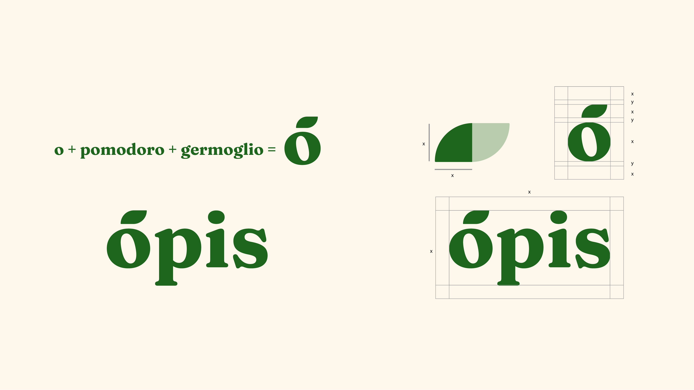

opis
Opis è un e-commerce dedito alla vendita di cibo
biologico e a km0 sul territorio laziale. Lavora in stretto contatto
con allevatori e agricoltori professionisti e qualificati. Infatti, tutti i
prodotti provengono dalle cinque province e i loro dintorni della regione.
 

Il nome deriva da “opis”, una divinità romana, ma molto
importante anche per i territori sabini.
È la personificazione della terra e dell’abbondanza.
Il nome è breve, semplice, memorabile e facile da pronunciare.
La scelta è voluta per sottolineare la tradizione,
chiamando l’azienda con un nome di una divinità romana.
La palette scelta per il brand si ispira ai colori della natura. Per il logotipo è stato scelto come colore principale un verde, colore per antonomasia della natura, del biologico e trasmette sensazioni di tranquillità e di sicurezza emotiva. Per contrasto è stato usato un bianco caldo, un colore che riprende l’arancione, colore gioioso e allegro insieme al giallo, e i due tipi di marroni, per associarli alla terra.